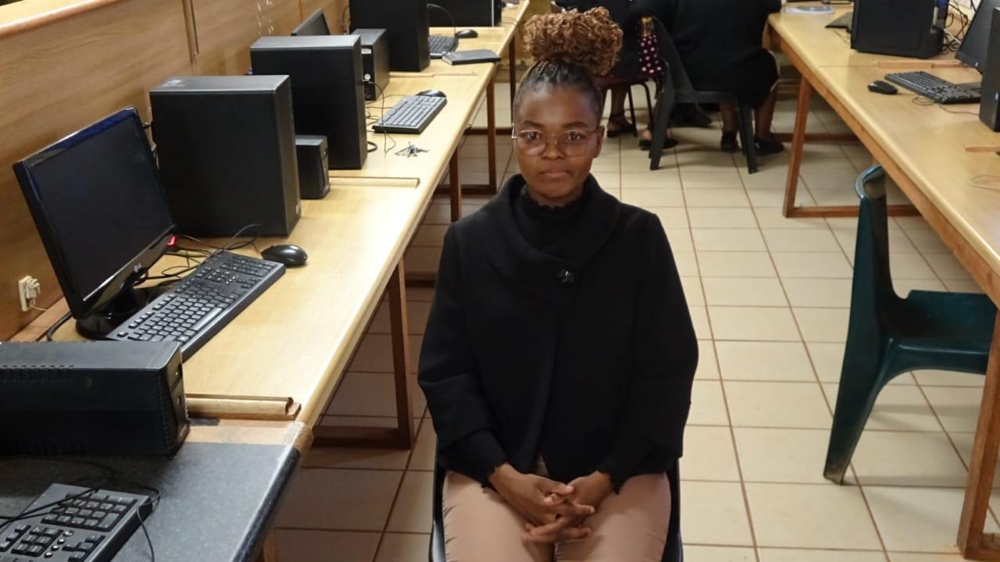

Emalalatini Development Centre College
My first work experience was an internship at Emalalatini Development Centre College — after the internship, I was kept on under contract, working across IT, systems development, and marketing while supporting digital learning initiatives.
I built a Student Registration System and a Student Performance Management System to support student administration and academic performance tracking, and was also responsible for registering students directly.
Alongside the systems work, I handled day-to-day administration for the department — emails and correspondence, phoning students directly about registration and enquiries, and keeping records up to date.
As part of piloting the Moodle digital learning platform across roughly 65 schools around Eswatini, I visited schools directly to orient both students and teachers on the system — introducing students to ICT for the first time, and helping students and lecturers troubleshoot technical issues along the way.
